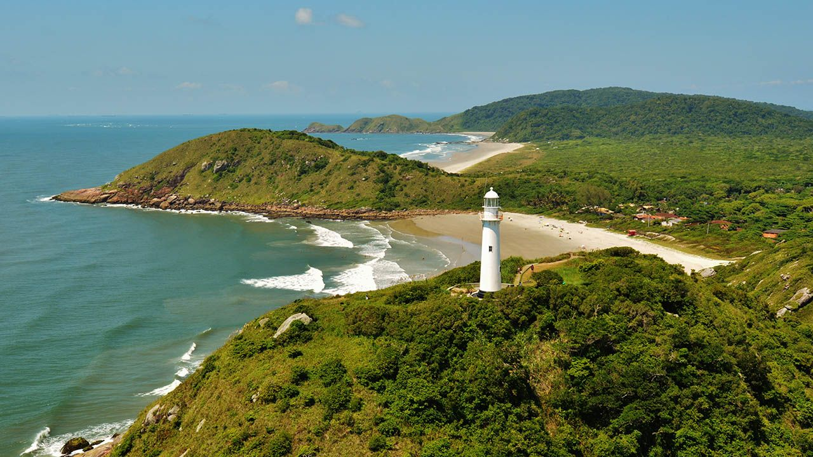

Região Sul

Beto Carreiro World
Penha/SC

Florianopolis
Florianopolis/SC

Ilha do Mel
Ilha do Mel/PR
Por Júnior Gonçalves

Beto Carreiro World
Penha/SC
Florianopolis
Florianopolis/SC
Ilha do Mel
Ilha do Mel/PR